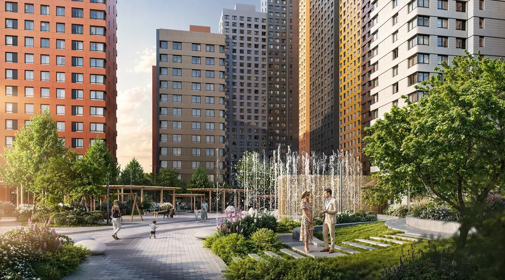
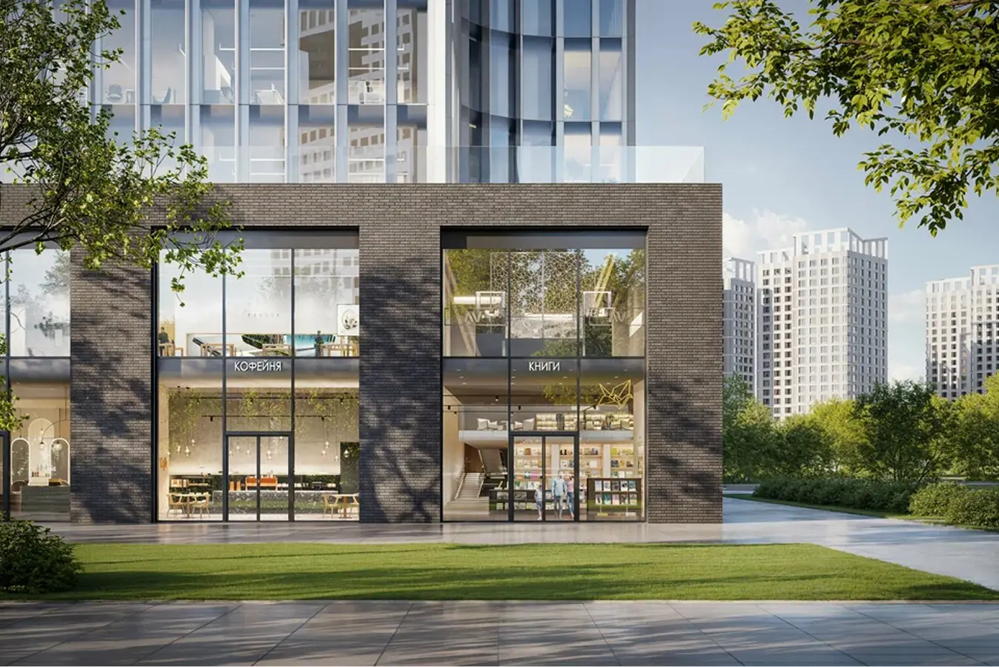

Вертикальная логистика на строительстве ЖК «Sky Garden» | VECTOR SC 200/200

Когда здание растет вверх: как вертикальная логистика помогает сохранять темпы строительства ЖК «Sky Garden»
Каждый высотный строительный проект проходит момент, когда привычная организация работ перестает быть эффективной. Если в начале строительства большинство операций сосредоточено у основания здания, то с увеличением этажности расстояние между строительной площадкой и рабочими зонами начинает измеряться уже не метрами, а десятками этажей.
Именно в этот период на первый план выходит задача, о которой редко задумываются будущие жители дома, — организация вертикальной логистики.
Для строительной площадки это означает необходимость ежедневно доставлять сотни людей, тонны материалов, инструмент, инженерное оборудование и технологическую оснастку на различные уровни строящегося здания. Причем делать это необходимо без остановки основных строительных процессов.
Такую задачу сегодня решают практически все современные высотные жилые комплексы.
Одним из них является ЖК «Sky Garden», где по мере роста здания увеличивается интенсивность строительных работ и одновременно возрастает нагрузка на систему внутренних перевозок.
Строительная площадка — это постоянно меняющийся организм
Со стороны может показаться, что строительство развивается равномерно. На практике каждая новая неделя меняет характер работы объекта. Еще недавно основная нагрузка приходилась на монолитные работы. Через некоторое время к ним добавляется монтаж инженерных коммуникаций.
Следом начинается устройство фасадов. Позже появляются отделочные подразделения.
Одновременно на площадке начинают работать десятки специализированных подрядчиков.
Каждый из них имеет собственный график, собственные материалы и собственную последовательность выполнения работ. При этом все пользуются одной общей транспортной инфраструктурой. Именно поэтому вертикальная логистика становится одним из наиболее важных элементов организации строительства.

Монтаж — только начало
- Когда строительный подъемник установлен, для большинства людей работа считается завершенной.
- На самом деле именно с этого момента начинается наиболее продолжительный этап его эксплуатации.
- В течение всего периода строительства оборудование ежедневно работает в условиях высокой нагрузки.
FAQ
Почему вертикальная логистика считается важной частью строительства?
Потому что от скорости и организации перевозок зависит работа большинства строительных процессов. По мере увеличения этажности влияние транспортной системы на производительность объекта становится особенно заметным.
Какие преимущества дает двухкабинный строительный подъемник?
Он позволяет разделить потоки людей и грузов, сократить время ожидания и обеспечить более равномерную работу строительной площадки.